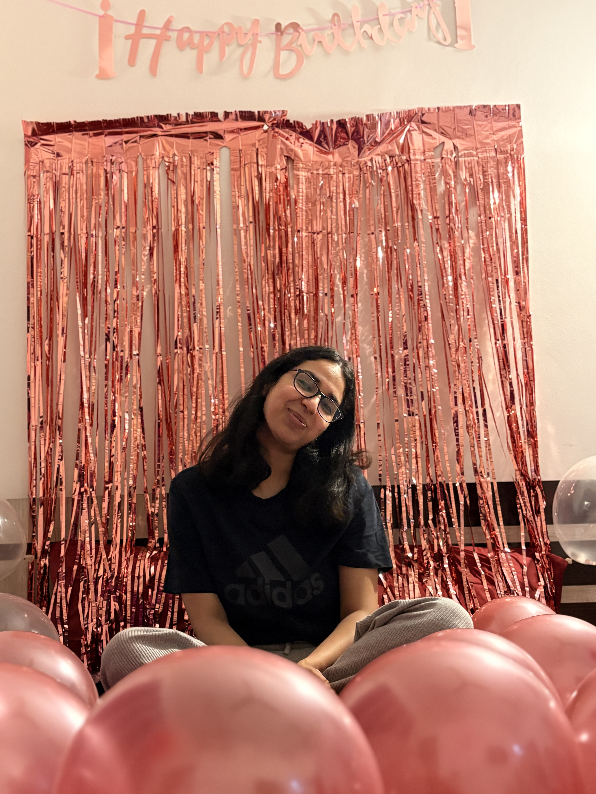
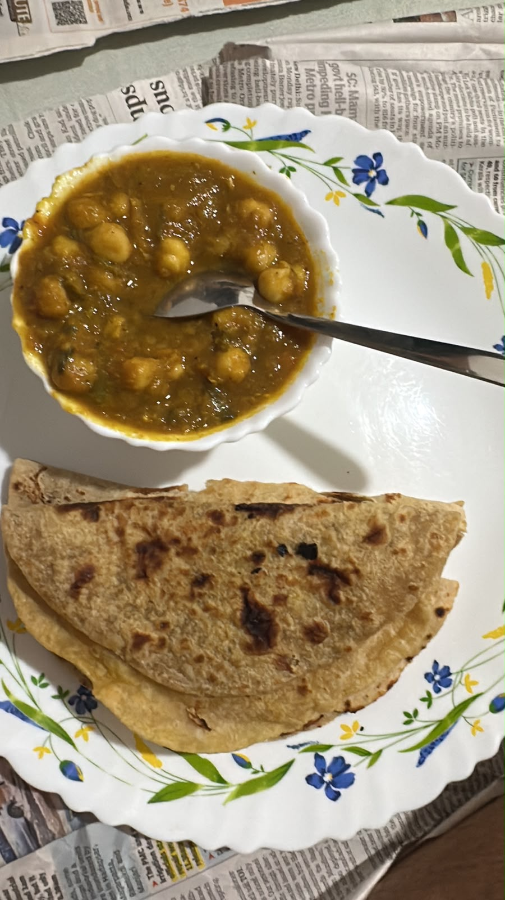
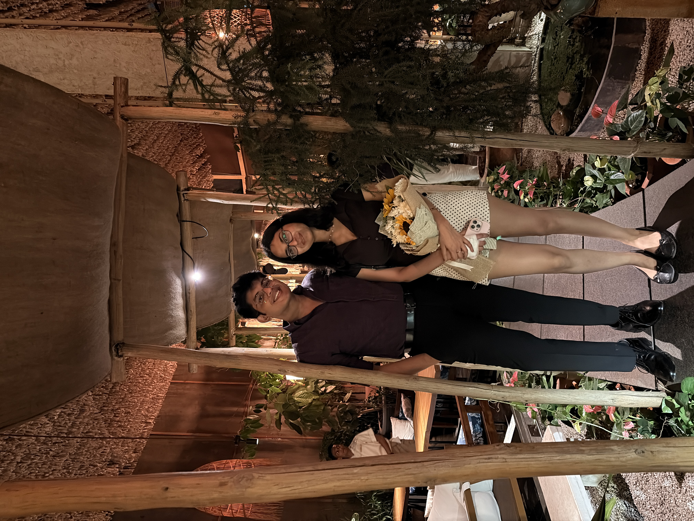

Convergence
"Distance was just a variable. The constant was always you."
From Vectors to Shared Space
The Origin Coordinate
Where two completely distinct trajectories crossed for the very first time. No script, no expectations—just the quiet beginning of everything.
Day One
1,400 kilometers between Bombay and Delhi. We decided that no matter the physical gap, you were my person.
The Longing Phase
Hours through cold phone screens, countdown timers, wishing you took that detour, and wondering when we'd share the same air.
The 1,400 km Collapse
You came here. The screens turned off. Waking up to you, hearing your actual laugh instead of a phone speaker, and realizing our lives fit together seamlessly.
Half a Year
Not just surviving distance, but building a life through the ordinary, joyful domesticity of each day.
The Everyday Art of You
Because the real magic isn’t just grand gestures—it's how we spend our ordinary hours.
Questionable Culinary Experiments
The late dinners that were technically edible, recipes we completely improvised, and the mutual agreement that whatever came out of that pan counted as gourmet cuisine.
Physical Gap
From 1,400 km of waiting to simply rolling over and pulling you closer.
Midnight Ice Cream Runs
Stealing spoonfuls at ungodly hours when the rest of the world is asleep.
Seeing You Sleepy & At Peace
The quiet moments when the banter fades, you’re completely exhausted and comfortable, and I get to make sure you're tucked in warm. Pure, uninterrupted serenity.
Taking Care of You
Making sure you've eaten, checking if you're warm, holding you when sleep overtakes you, and finding joy in making your world just a little easier every single day.
Time in Shared Orbit
Clock initialized April 15, 2026 • Running continuously with zero reset.
The Small Details
Click any memory capsule to unfold why it matters.
Next Detours
The bucket list we’re crossing off in Chapter 2.
The 1,400 km Collapse
End the phone-only era and spend an entire uninterrupted month together.
Mastering One Recipe
Cooking an entire multi-course dinner together without triggering a smoke alarm or blaming each other.
The Spontaneous Road Trip
Pack a weekend bag, cue our vinyl soundtrack, and drive with no strict itinerary.
Always Taking Care of You
Holding your hand when you're anxious, making sure you eat, and celebrating every small win.
Fragments of Us
Click any memory to inspect the artifact.

Your laughter in real-time

Questionable Dinners 🍽️
No screens. Just you.

Late Night Dates
The Soundtrack of Us
Select a track to cue the needle.
What Makes You Beautiful
As you are in my eyes, completely unposed.
Tum Se Hi
From the phone call days to quiet evenings in person.
Saathiya
The soundtrack for the detour that changed everything.
Let $P(n)$ be the proposition that loving you makes ordinary life extraordinary.
Base Case $P(1)$: The first day we spent together confirmed that presence exceeds every projection.
Inductive Step $P(k) \implies P(k+1)$: Assume after $k$ days of late-night meals, shared laughter, and quiet care, you remain my home. Every subsequent dawn $(k+1)$ reaffirms this with zero divergence.
Conclusion: $P(n)$ holds for all $n \in \mathbb{N}$ through all upcoming months and years. Q.E.D.
Hold to unlock Month 06
Happy Six Months, My Love.
Three months ago, distance was a 1,400-kilometer question waiting for an answer. Now, after sharing mornings, questionable cooking experiments, midnight ice creams, and the quiet comfort of taking care of you—there are no more unknowns left.
You turned what could have been just another year into the most meaningful six months of my life. I love being your person in every ordinary, messy, beautiful moment.